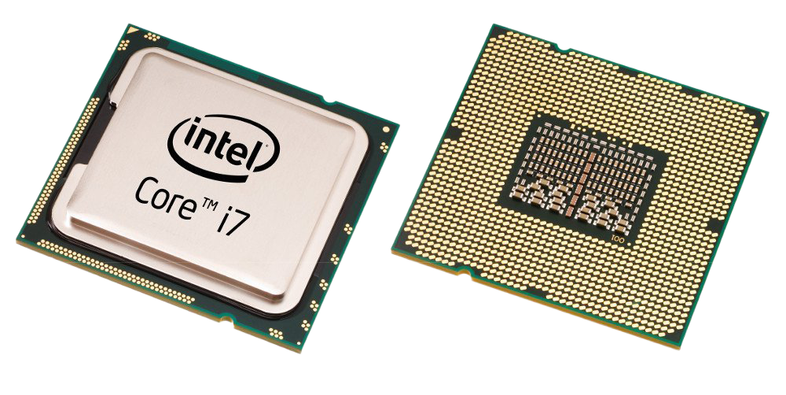
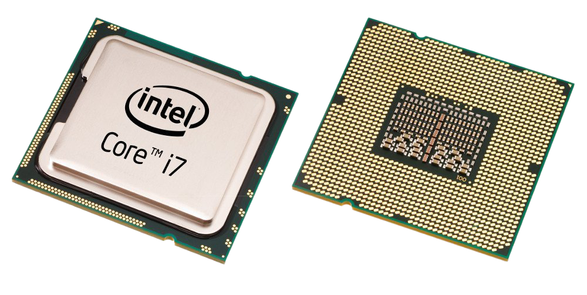
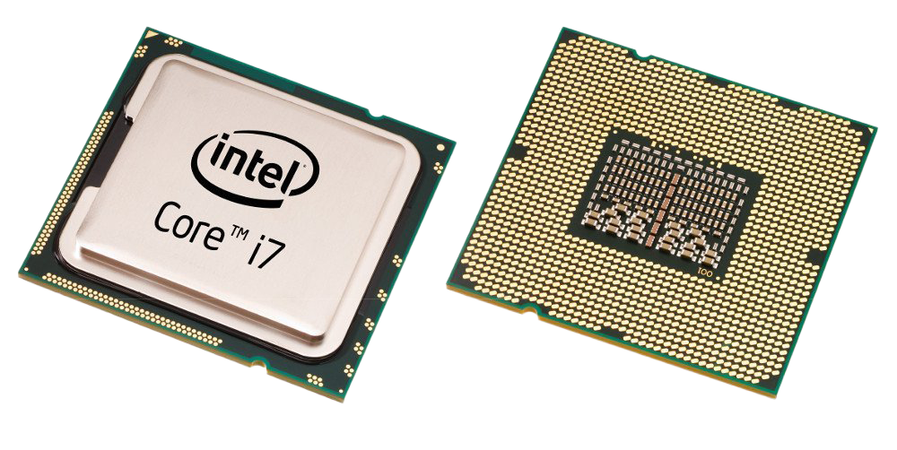

A CPU fornece a capacidade de processamento e as instruções a todas as operações do seu computador.
A "protencia" do Processador e medida na frequência de giga-hertz (GHz), quanto maior o GHz mais rápido o processador. Porém, mais GHz significa também que a CPU consome mais energia e consequentemente esquetara mais tambem.
